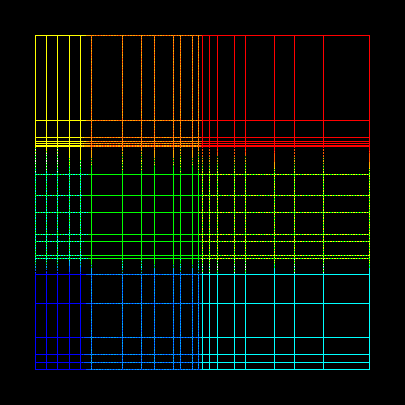

Some Simple Examples
Example 1 is a simple, 10x10 unit 2D grid. The y axis has 10 divisions which are equally spaced. The x axis also has 10 divisions, but these are logarithmically spaced, from small divisions to large divisions.
Click here to see the GRIDDER input file for example 1.

Example 2 is a 6x6 unit 2D grid. The x axis has three regions of spacing. The first (leftmost) region s 1 unit long and has 5 equally spaced divisions. The second region is two units long and has 10 divisions logarithmically spaced from large to small. The third region is 3 units long with 10 divisions logarithmically spaced from small to large. The y axis also has three regions of spacing. All of these regions are 2 units long with 10 divisions, geometrically spaced. The first (bottom) region has a geometric factor of 1.1, the second has a geometric factor of 1.3, and the third has a geometric factor of 1.6.
The different colors in Example 2 represent different "zones" of spacing. Zones are created by the overlapping of different regions of different spacing in different axes. Each zone is automatically labeled with a different material number when it is outputted in AVS format. The different colors show the different materials.
Click here to see the GRIDDER input file for example 2.